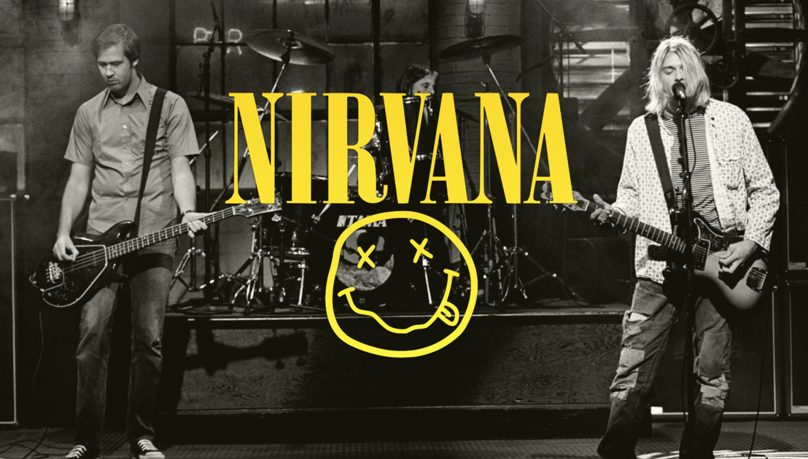

Nirvana
Nirvana («Нирва́на»; МФА: [nɪɹˈvɑnə]) — американская рок-группа, созданная вокалистом и гитаристом Куртом Кобейном и басистом Кристом Новоселичем в Абердине, штат Вашингтон, в 1987 году. В составе коллектива сменились несколько барабанщиков; дольше всех с группой играл ударник Дэйв Грол, присоединившийся к Кобейну и Новоселичу в 1990 году.
В 1989 году Nirvana стала частью сиэтлской музыкальной сцены, выпустив на независимом лейбле Sub Pop дебютный альбом Bleach. После подписания контракта с крупным лейблом DGC Records Nirvana приобрела неожиданный успех с песней «Smells Like Teen Spirit» из своего второго альбома Nevermind, выпущенного в 1991 году. Впоследствии Nirvana вошла в музыкальный мейнстрим, популяризовав поджанр альтернативного рока, названный гранжем. Курт Кобейн оказался в глазах СМИ не просто музыкантом, а «голосом поколения», а Nirvana стала флагманом «поколения Х». В 1993 году вышел третий и последний студийный альбом группы, In Utero, композиции которого в музыкальном плане сильно отличались от предыдущих работ коллектива.
Недолгая, но яркая история группы прервалась в связи со смертью Курта Кобейна 5 апреля 1994 года, но в последующие годы известность команды лишь росла. В 2002 году незавершённая демозапись песни «You Know You’re Right», над которой группа работала незадолго до смерти Кобейна, заняла первые строчки мировых хит-парадов. Со времени выхода дебютного альбома записи Nirvana были проданы в количестве 75 миллионов экземпляров по всему миру, и в 25 миллионов копий в США.
Популярные песни:
Smells Like Teen Spirit
Come As You Are
Rape Me
Something In The Way
Heart-Shaped Box